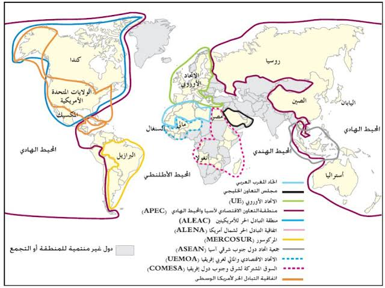

الأدفاق التجارية العالمية
مقدمة
تجسد الأدفاق التجارية إلى جانب بقية الأدفاق (سياحية – مالية – إعلامية) ترابط المجال العالمي، وذلك نتيجة لتناميها بنسق سريع منذ تسعينات القرن العشرين. فما هي مظاهر نمو الأدفاق التجارية وما هي عواملها؟
II الأطراف المتدخلة في الأدفاق التجارية العالمية
1. الشركات عبر القطرية: المحرك الرئيسي للتجارة العالمية
تعريفها: هي شركة كبرى تمارس أنشطتها مباشرة أو عن طريق فروعها في الخارج مع الحفاظ على مقرها الاجتماعي في بلدها الأصلي. تعمل الشركات عبر القطرية على الاستفادة من فوارق كلفة الإنتاج بين مناطق العالم بعولمة الاستثمار وتجزئة مراحل الإنتاج.
تضاعف عدد الشركات الأم قرابة 3 مرات بين 1990 و2018 وأصبحت تعد 60 ألف، بينما تضاعف عدد الفروع وأصبح 500 ألف، وينتمي ثلاثة أرباعها إلى البلدان المتقدمة.
تسيطر الشركات عبر القطرية على ثلثي الأدفاق التجارية العالمية، وهي تضغط على حكوماتها وعلى المنتديات الاقتصادية العالمية (منتدى دافوس) وعلى المنظمة العالمية للتجارة لمزيد تحرير التجارة العالمية دون مراعاة مصالح بلدان الجنوب.
2. المنظمة العالمية للتجارة: دور محفز على تحرير التجارة العالمية
تعريفها: تكونت سنة 1995 ويبلغ عدد الأعضاء 166 عضواً إضافة 20 دولة في شكل مراقب. منذ تأسيسها عملت المنظمة العالمية على القيام بدورها من أجل تحرير التجارة العالمية من خلال:
- إلزام الدول الأعضاء بالقيام بتسهيلات وامتيازات تجارية لفائدة بقية الدول.
- فض النزاعات بين الدول الأعضاء.
- وضع السياسات الاقتصادية العالمية بالتعاون مع مؤسسات دولية.
- العمل على خفض الرسوم الجمركية الموظفة على المنتوجات الصناعية المتبادلة كما تسعى إلى تعميم الإجراءات على المنتجات الفلاحية والخدمية رغم اعتراض عديد الدول.
رغم نجاحها تواجه معارضة شديدة من قبل الأطراف الجديدة (مثل مجموعة العشرين بزعامة البرازيل).
3. المؤسسات المالية والنقدية العالمية: البنك الدولي وصندوق النقد الدولي
تعريف صندوق النقد الدولي: منظمة مالية عالمية أنشئت سنة 1944 قصد النهوض بالتعاون المالي الدولي، وهو يضم 190 بلد عضو. هي مؤسسات عالمية تسعى إلى فرض النموذج الليبرالي للتنمية، وهي تخضع إلى هيمنة القوى الاقتصادية الرأسمالية الكبرى (خاصة الولايات المتحدة الأمريكية) التي تعمل على مزيد تحرير التجارة العالمية بضبط التوجهات الاقتصادية للبلدان النامية مثل برنامج الإصلاح الهيكلي الذي فرضه صندوق النقد الدولي على الدول النامية.
4. الأطراف الجديدة
أ. بلدان الجنوب
تسعى بلدان الجنوب إلى الدفاع عن مصالحها ضمن المنظمة العالمية للتجارة بالتكتل وفق مجموعات مثل "مجموعة العشرين" التي تتزعمها البرازيل (تكونت أثناء ندوة كنكون سنة 2003)، وهي تطالب الولايات المتحدة الأمريكية والاتحاد الأوروبي بإلغاء كل أشكال الدعم الذي تقدمه لفلاحيها.
ب. المنظمات غير الحكومية
تعد أكثر من 1000 من بينها "أوكسفام"، وهي تطالب بإرساء نظام تجاري عالمي عادل يراعي مصالح البلدان النامية، وهي تنظم المظاهرات والحملات الإعلامية المناهضة للعولمة.
خاتمة
تتنامى الأدفاق التجارية العالمية بفعل تحولات الاقتصاد العالمي وتحرير التجارة وتطور التقنيات، مما يجسد ترابط المجال العالمي ويبرز مظاهر العولمة.
📖 تعريفات
🏢 منظمات ومؤسسات
- الشركات عبر القطرية: شركة كبرى تمارس أنشطتها مباشرة أو عن طريق فروعها في الخارج مع الحفاظ على مقرها الاجتماعي في بلدها الأصلي، تسعى للاستفادة من فوارق كلفة الإنتاج وتجزئة مراحل الإنتاج.
- المنظمة العالمية للتجارة: منظمة دولية تأسست سنة 1995 تضم 166 عضواً و20 مراقباً، تعمل على تحرير التجارة العالمية عبر خفض الرسوم الجمركية وفض النزاعات ووضع السياسات الاقتصادية.
- صندوق النقد الدولي: منظمة مالية عالمية أنشئت سنة 1944، تضم 190 بلداً عضواً، تسعى إلى فرض النموذج الليبرالي للتنمية وتخضع لهيمنة القوى الرأسمالية الكبرى.
- البنك الدولي: مؤسسة مالية دولية تعمل بالتعاون مع صندوق النقد الدولي على تمويل مشاريع التنمية وفرض سياسات الإصلاح الهيكلي على البلدان النامية.
- مجموعة العشرين: تكتل لبلدان الجنوب داخل المنظمة العالمية للتجارة، تكون أثناء ندوة كنكون سنة 2003 بزعامة البرازيل، يطالب بإلغاء دعم الفلاحة في الشمال.
- المنظمات غير الحكومية: منظمات مثل أوكسفام تطالب بنظام تجاري عالمي عادل، وتنظم حملات مناهضة للعولمة.
🗺️ خرائط ومعطيات مصورة
